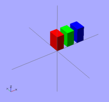

We can change the color of an object by giving it RGB values. Instead of the traditional RGB values from 0 to 255 floating point values are used from 0.0 to 1.0. Note: changing the colors works only in Preview mode (F5); render mode (F6) does not currently support color.
| Usage example 1 - changing the color of an object: | |
color([1,0,0]) cube([2,3,4]); translate([3,0,0]) color([0,1,0]) cube([2,3,4]); translate([6,0,0]) color([0,0,1]) cube([2,3,4]); |
 OpenSCAD changing the color of an object |
Color names can be used in the 2011.12 version (and newer). The names are the same used for Web colors. For example: color("red") cube();
If you think of the entire command as a sentence, then color() is an "adjective" that describes the "object" of the sentence (which is a "noun"). In this case, the object is the cube() to be created. The adjective is placed before the noun in the sentence, like so: color() cube();. In the same way, translate() can be thought of as a "verb" that acts upon the object, and is placed like this: translate() color() cube();. The following code produces the same result:
translate([6,0,0])
{
color([0,0,1]) // notice that there is NO semicolon
cube([2,3,4]); // notice the semicolon is at the end of all related commands
}
Previous: Positioning an object
Next: Model views
{kind=link}